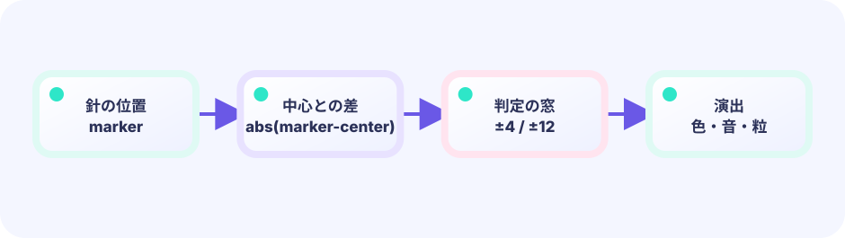

Updateの刻み
Ebitengineは設定された一定の刻みで Update を呼びます。位置へ少しずつ速さを足すので、動きがつながります。
marker += speed★☆☆☆☆ / PLAYABLE
左右に動く白い線を、真ん中の帯で止めます。まず遊び、そのあとで「少しずつ動かす」と「今は動いている／止まっている」の切り替えを見つけます。
線の位置・速さ・状態を変えるのは Update だけです。Draw は呼ばれた時点の値を画面へ投影するだけで、位置や得点を書き換えません。したがって描画回数が変わっても、同じ入力ならゲームのルールは同じように進みます。
PLAYABLE / WEBASSEMBLY
スペース、クリック、タップで停止。中央に近いほど高得点です。
はじめて読む人へ
状態は『狙っている・判定を見ている・再挑戦待ち』のような今の場面。switchは状態ごとの処理をif/elseより読みやすく並べます。%は割り算の余りです。
このページの1本
説明と次のコードを対応させてから、ゲームで変化を確かめよう。
phase := frame % 120Updateの刻みと状態
Updateは設定された一定の刻みで状態を少しずつ進めます。状態機械は「動く／止める／結果」の札を持ち、ラウンドごとに左右を交代すると同じタイミングの暗記ゲームになりません。Drawの回数はこのルールを変えません。
round % 2

DEEP DIVE / TIME & STATE
Updateのたびに 位置 = 位置 + 速さ を計算します。端に着いたら速さの符号をひっくり返すと、行ったり来たりになります。止めるときは「動かない状態」へ切り替え、Drawはその時点の位置を表示します。
Ebitengineは設定された一定の刻みで Update を呼びます。位置へ少しずつ速さを足すので、動きがつながります。
marker += speed左端や右端へ着いたら speed = -speed。向きだけ変えて、同じ速さで戻ります。
speed = -speed動いているか、止まっているか。止まっているあいだは位置を進めず、中央との距離だけ採点します。
stopped boolTRY IT / 1 UPDATE AT A TIME
「Updateを1回」で線が動きます。端で向きが変わります。「止める」を押すと中央との距離で得点します。
本物のゲームでは、設定された刻みでUpdateが自動で進みます。ここは仕組みを見るためのスローモーションです。
TRY IT · GO
x += speed; if x > max || x < min { speed = -speed } if justPressed { stopped = true } if abs(x-center) < zone { score++ }
—
THE TWO-MODE RULE
動くとき: marker += speed止まるときdistance = |marker - center|同じボタンでも、状態によって意味が変わります。動いていれば「止める」、止まっていれば「次のラウンドへ」。これは「いまの場面（待ち／動く／結果）を覚えておいて、それに応じてふるまいを切り替える」という考え方です。こういう仕組みをプログラムの世界では「状態機械（ステートマシン）」と呼びます。
実際に見る順番は3つだけ：①ボタンが押されたか読む → ② stopped で今が「動く／結果」のどちらか確認する → ③動いていれば止め、結果なら次のラウンドへ切り替える。名前より、この確認順を追えることが大切です。
コードに出てくる % はパーセントではなく割り算の余りを表す記号です。round % 2 は奇数なら1、偶数なら0。ラウンドごとに左端スタートと右端スタートを交互にするため、余りを使って最初の進行方向を反転しています。いつも同じ端から始まると、同じタイミングを覚えるだけになってしまうからです。
|marker - center| の縦線は絶対値（math.Abs）。マイナスをプラスに直すので、「中央より左でも右でも、どれだけ離れたか」だけが残ります。
速さの式 3.2 + float64(g.round)*0.18 では、整数の round を float64(...) で小数に変換しています。たとえば「個数」のようにぴったり数える整数と、「距離」のように半端も出てくる小数は、違う種類の箱のようなものです。Goはこの2種類をそのまま混ぜて計算させてくれないので、float64(...) で整数を小数の箱に入れ替えてから掛けます。
IN THE REAL GAME
入力を受けたあとに「いま止まっているか？」を見ます。動いているときだけ位置を進め、端で向きを反転します。
得点の switch { case distance <= 8: ... } は、変数を書かない switch です。「上から順に条件を見て、最初に当てはまった case を使う」書き方で、if / else if の列と同じ意味です。よく見る switch x { case 1: } とは仲間ですが、比較対象を毎回 case 側に書きます。
func (g *game) Update() error {
if pressed() {
if g.stopped {
g.stopped = false // 次のラウンド
} else {
g.stopped = true
g.score += scoreFor(g.markerX)
}
}
if g.stopped {
return nil
}
g.markerX += g.speed
if g.markerX < 45 || g.markerX > width-45 {
g.speed = -g.speed
}
return nil
}TODAY — まずここを見る
下のコードがこのゲームの全部です（図形だけで動いています）。コピーして手元で開けます。その前に、上の「まずここを見る」3つだけ追ってください。
package main
import (
"fmt"
"image/color"
"math"
"github.com/kumagi/EbiShowcase/internal/lessonlogic"
"github.com/hajimehoshi/ebiten/v2"
"github.com/hajimehoshi/ebiten/v2/ebitenutil"
"github.com/hajimehoshi/ebiten/v2/inpututil"
"github.com/hajimehoshi/ebiten/v2/vector"
)
const (
screenWidth = 480
screenHeight = 720
centerX = screenWidth / 2
barLeft = 45
barRight = screenWidth - 45
)
type game struct {
markerX float64 // 動く線の位置
speed float64 // 1 tickで動く量（マイナスなら左へ）
score int
round int
stopped bool // 止めた直後か
}
// スペース・クリック・タッチのどれかが「いま押された」か
func justPressed() bool {
if inpututil.IsKeyJustPressed(ebiten.KeySpace) {
return true
}
if inpututil.IsMouseButtonJustPressed(ebiten.MouseButtonLeft) {
return true
}
if len(inpututil.AppendJustPressedTouchIDs(nil)) > 0 {
return true
}
return false
}
// 中心からの距離で得点を決める
func pointsForDistance(distance float64) (points int, label string) {
return lessonlogic.TimingScore(distance)
}
// --- ここから Update ---
func (g *game) Update() error {
if justPressed() {
if g.stopped {
// 次のラウンドを始める
g.stopped = false
g.round++
g.speed = 3.2 + float64(g.round)*0.18
// 奇数ラウンドは左向きからスタート
if g.round%2 == 1 {
g.speed = -g.speed
}
} else {
// 動いている線を止めて採点する
g.stopped = true
distance := math.Abs(g.markerX - centerX)
points, _ := pointsForDistance(distance)
g.score += points
}
}
if g.stopped {
return nil
}
// 線を動かす
g.markerX, g.speed = lessonlogic.BouncedPosition(g.markerX, g.speed, barLeft, barRight)
return nil
}
// --- ここから Draw ---
func (g *game) Draw(screen *ebiten.Image) {
screen.Fill(color.RGBA{7, 20, 38, 255})
// メーターの帯（外側 → 内側ほど高得点）
vector.DrawFilledRect(screen, 35, 310, screenWidth-70, 80, color.RGBA{16, 44, 69, 255}, false)
vector.DrawFilledRect(screen, centerX-55, 310, 110, 80, color.RGBA{255, 105, 79, 255}, false)
vector.DrawFilledRect(screen, centerX-28, 310, 56, 80, color.RGBA{255, 205, 69, 255}, false)
vector.DrawFilledRect(screen, centerX-8, 310, 16, 80, color.RGBA{45, 226, 194, 255}, false)
// 動く白い線
vector.DrawFilledRect(screen, float32(g.markerX-4), 285, 8, 130, color.White, false)
ebitenutil.DebugPrintAt(screen, fmt.Sprintf("SCORE %04d ROUND %02d", g.score, g.round+1), 145, 35)
if g.stopped {
distance := math.Abs(g.markerX - centerX)
_, label := pointsForDistance(distance)
ebitenutil.DebugPrintAt(screen, label+"\n\nTAP FOR NEXT ROUND", 165, 470)
} else {
ebitenutil.DebugPrintAt(screen, "TAP / SPACE TO STOP", 165, 470)
}
}
func (g *game) Layout(_, _ int) (int, int) {
return screenWidth, screenHeight
}
func main() {
ebiten.SetWindowSize(screenWidth, screenHeight)
ebiten.SetWindowTitle("Stop the Meter — Ebitengine")
g := &game{markerX: barLeft, speed: 3.2}
if err := ebiten.RunGame(g); err != nil {
panic(err)
}
}
WITHOUT STATE
ボタンを押すたびに同じ処理だけだと、「止める」と「再開する」を分けられません。
WITH STATE
stopped ひとつで、入力の意味と更新の有無を切り替えられます。
YOUR FIRST RULE
games/core/timing-meter/main.go の game に perfectStreak int を足します。Update の points, _ := pointsForDistance(distance) の直後で、中心ぴったりの points == 100 なら streak を増やし、2回連続なら g.score += 50。それ以外は streak を0にします。Draw は表示するだけ。go test ./... とローカル実行で確認します。
FEEDBACK